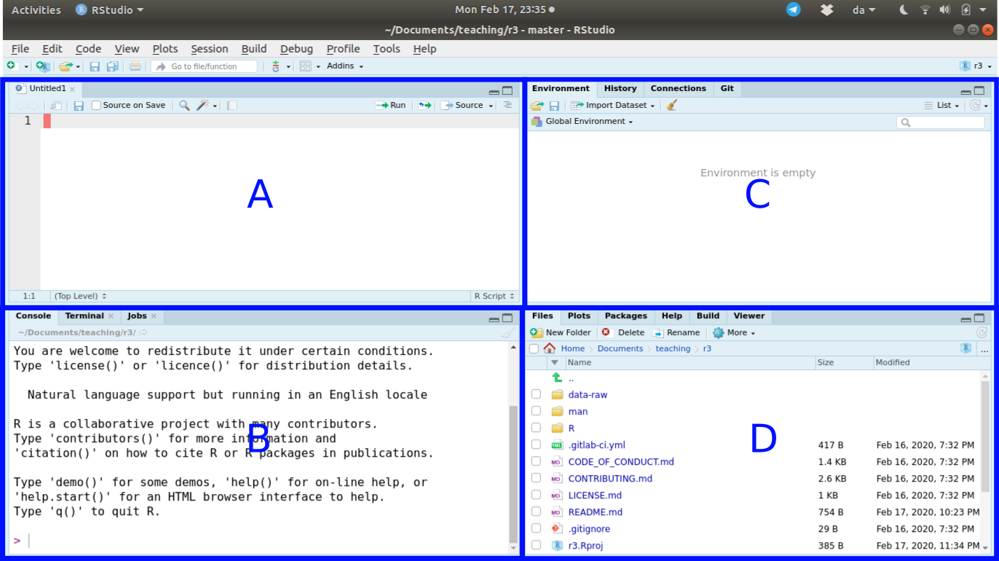

7 R and RStudio
🚧 This section is being actively worked on. 🚧
During this course we will be spending most of our time in RStudio. RStudio is an “environment” that we use to interact with R. R is like an engine, while RStudio is like the tools we use to actually work with that engine. Prior to taking a look at what RStudio looks like, let’s talk briefly about R as a programming language.
7.1 What is R?
R is a free programming language/environment used in statistical computing, data analytics, and scientific research. R is used to clean, organize, analyze, and report on data. R has powerful visualization features, so it is a particularly useful tool for creating charts and figures. R is different from SPSS and other statistical programs in that you run analyses by typing commands in a console rather than using click-based, drop-down menus.
In recent years, R has become one of the most popular languages among statisticians and data scientists for several reasons:
- It is open source, so you are able to see how exactly, for instance, a statistical method works.
- It runs on all operating systems (Windows, macOS, Linux).
- It is highly compatible with other programming languages.
- It provides access to a vast number of packages that can do nearly any task or statistical approach.
- There is a huge online community to help you problem-solve any issue and that has so many learning resources, support, and help!
- It is free, which means you can continue using the skills you gain in R throughout your entire career without worrying about expensive licensing fees (for example, if your employer can’t or doesn’t pay for the software).
- Strong push by major R developers to improve beginner-friendliness and usability of R, for example from Posit who makes RStudio and contributes heavily to R packages such as the tidyverse set of packages and Quarto.
- R has one of the best data visualization tools available with ggplot2.
However, like many programming languages, R is not easy to learn. Some commands you will use are spread across many packages, which means that you need to have prior knowledge of these packages in order to use some commands. But R offers such a supportive community and rich functionality that it is worth the challenge!
7.2 Getting familiar with RStudio
Let’s start getting familiar with RStudio and how to navigate and use it. Check out Figure 7.1 below. You can see that RStudio has four “panels”, dividing the screen into the four sections.
This image may look slightly different from your own computer depending on your operating system and other settings. If you haven’t created or opened an RStudio R Project (which is taught in the first session), your files may be outside the scope for RStudio to find them by itself. In that case, you will either have to change the current directory or make/open an RStudio R Project.

While you can customize where the individual panels go, the default panel layout is what is shown above.
- Panel “A” is the panel that shows the “scripts”, which we will be using a lot during the course. You may or may not see this panel when you open RStudio for the first time. This panel is where you write R code that will be saved as a file.
- Panel “B” is the Console. This is where R commands are sent and evaluated by R. This is the “engine”. No R code written here is saved. All code in this course will eventually be sent to the R Console, as this is the most common way of using and running R code. Throughout the rest of the pre-course tasks, if you see a code chunk with the label “Console” above it, this is the panel we want you to type or paste the code into.
- Panel “C” contains the Environment, History, Connections, and Git tabs. In this course, we will only be using the Environment tab.
- Panel “D” has the Files, Plots, Packages, Help, Build, and Viewer tabs. For this course, we will only be going over the Files, Plots, Packages, and Help tabs. There can be slight differences in your layout of tabs in each panel.
While we will spend part of the course using an R script to play around with code, we will also be learning and using Quarto (files that end in .qmd). Quarto is an important tool in helping make your analysis more reproducible. You may have read about R Markdown before or you may see it mentioned on websites or blogs after this course. Quarto is an upgraded version of R Markdown. We will explain Quarto (and R Markdown) in more detail in ?sec-reproducible-documents.
Quarto allows you to interweave chunks of code along with text and images. R runs the code and inserts the code output into the Quarto file. The Quarto document can be converted into a wide range of document types, including MS Word, PDF, or HTML. Some researchers write and manage entire papers, theses, websites, or books using Quarto, as it can make things easier to organize and maintain. In fact, this website is written with Quarto.
7.3 Quality of life settings
Before continuing, set some RStudio options that will help you and the helpers and teachers out a lot during the course. Go to Tools -> Global Options... and do these tasks:
- In “General”, under the “Basic” tab, uncheck all boxes under “R Session”, “Workspaces”, and “History”, as well as changing the “Save workspace to .RData on exit” to “Never”.
- In “Code”, under the “Editing” tab, change the “Tab width” to 2. The tidyverse style guide as well as styler both use 2 spaces for tabs. We can set this option here to save us with formatting issues.
- In “Code”, under the “Saving” tab, check all the boxes under “General” and “Auto-save”. This last one, the “Auto-save”, will help out a lot, since one of the biggest “troubleshooting issues” we encounter when helping during the first session is that people forget to save. This solves that problem.